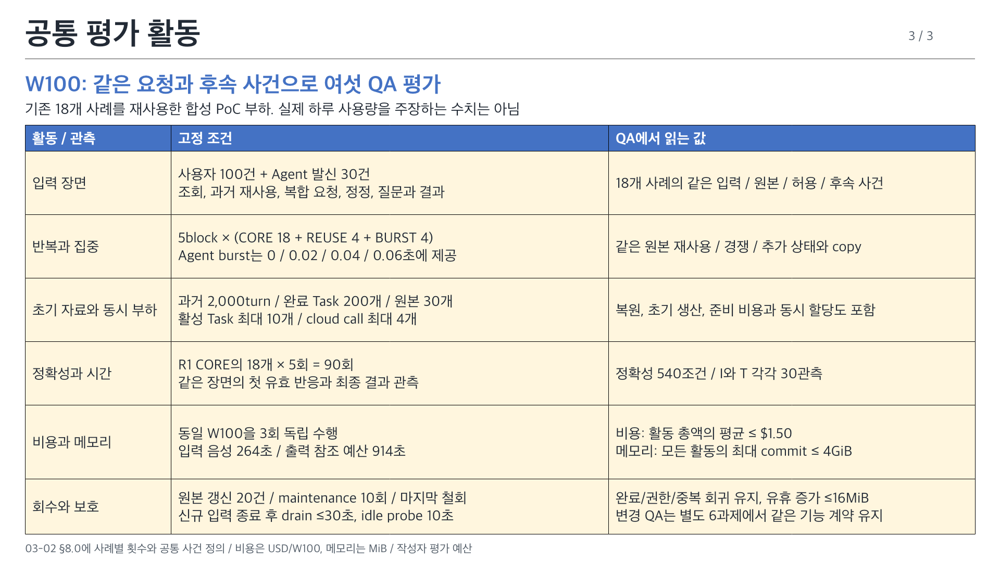

<!doctype html><html lang="ko"><meta charset="utf-8"><title>VIA ASR-QA attributes</title><style>body{margin:24px;background:#eff2f6;color:#222a35;font-family:system-ui}main{max-width:1600px;margin:auto}img{width:100%;display:block;margin:24px 0}a{color:#4472c4}</style><main><h1>VIA ASR-QA 품질 요구사항</h1><p>03-02의 여섯 QA, 번호순 우선순위. 작성자 평가안이며 실제 후보 성능은 아직 측정하지 않았습니다.</p><p><a href="VIA-quality-attributes.pptx">편집 가능한 PowerPoint</a>, <a href="../quality-attributes.md">문안과 원본 연결</a></p><section><h2>요약 1</h2></section><section><h2>요약 2</h2></section><section><h2>요약 3</h2></section></main></html>